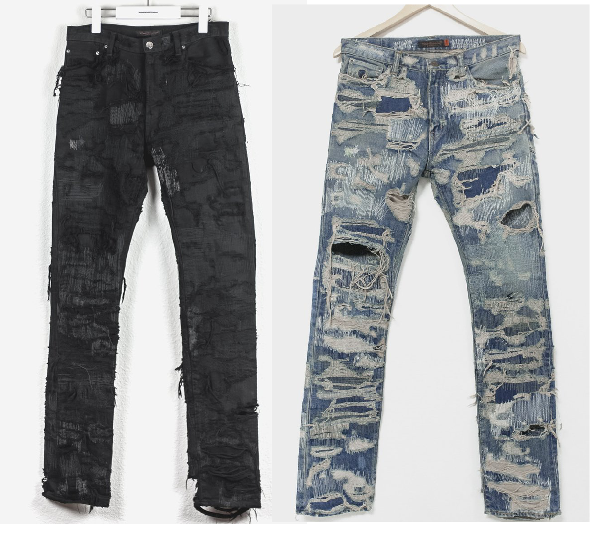
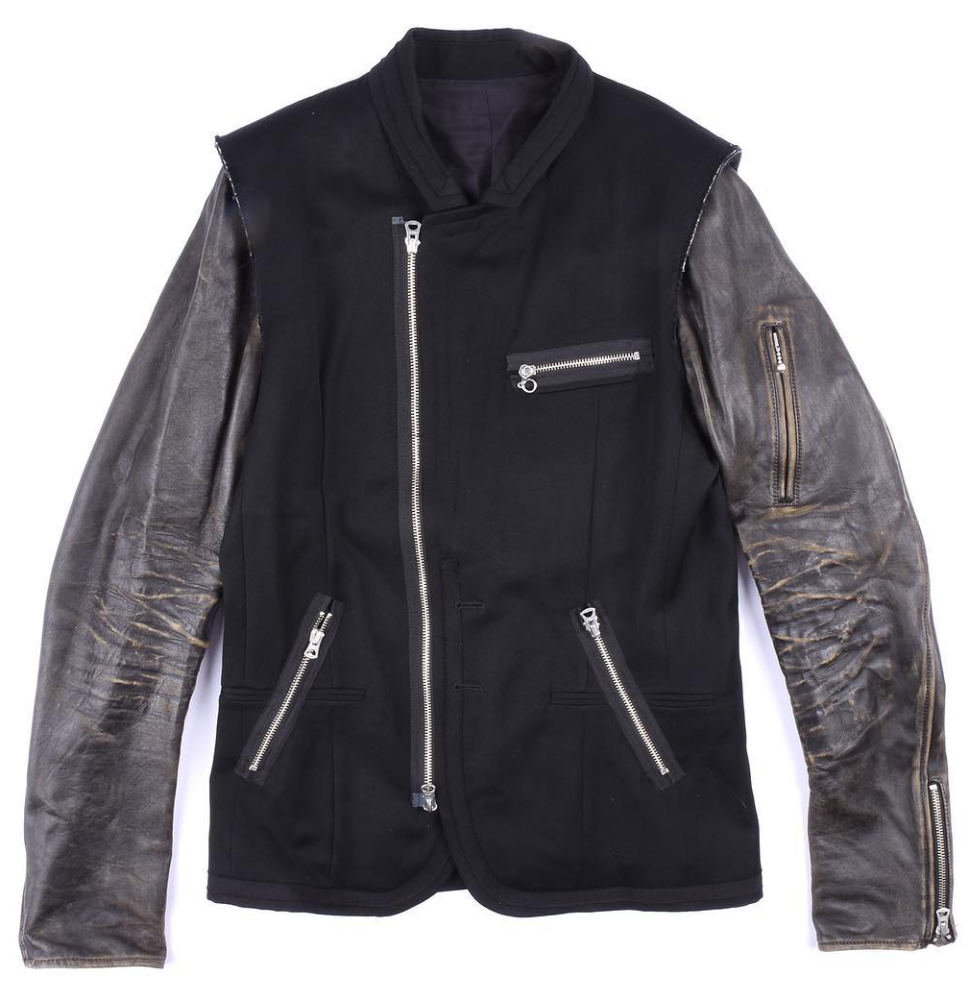

Handmade Expressions
Focusing more on the rough and thrown together theme of Undercover, Takahashi imagines garments as fragments and constructions with Arts and Crafts. Items from this collection are made to feel as if they are put together in a rush. But in reality, this chaotic nature is what makes this collection so special and allows Takahashi’s attention to detail to shine.
AW05 85 Jeans from Huiben.
Arguably the most sought-after Undercover piece of all time, the Arts and Crafts 85 Jeans seem to perfectly blend all of the reoccurring themes of Undercover into one pair of pants. Coming in a black and light wash version, these jeans consist of brutally destroyed denim that has been repaired with countless patches and reinforcement stiches. No two pairs are the same, as all work was done by hand. Pairs in mint condition can fetch up to $2,000.
AW05 Hybrid Leather Rider Blazer from groupienyc.
This hybrid leather jacket blazer perfectly showcases the elements of Arts and Crafts. By combining the torso of a suit blazer with the sleeve of a leather jacket, this garment appears as if it was created as a child’s art project. The added rider hardware also showcases the punk rock inspiration that drove Takahashi in Undercover’s early years.
Back to Top